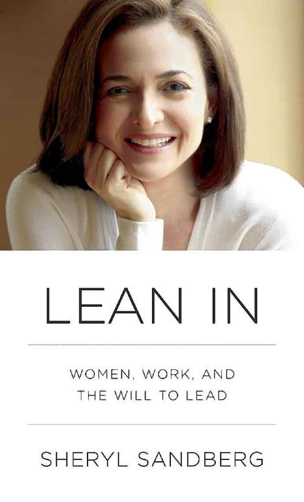

What is Lean In?
- Written by Sheryl Sandberg, Chief Operating Officer of Facebook
- A Movement started by Sandberg that emphasizes the importance for women to work together to achieve their goals and increased leadership
- Not all advice/ideas are perfect, is in some ways controversial

The Leadership Ambition Gap
- National trend - more men currently in/pursuing leadership/managerial positions than women
- Ambition is not always the problem, social cues (behaviors) can be a source
- Stereotype threat - when reminded of stereotypes, performance decreases
- Societal pressure for marriage - ex. going abroad
Upcoming events
- Resume Review/ Technical Interview Practice Session - Nov.
- WCS/IEEE/ACM Halloween Barcrawl - Thursday Oct. 30, 8pm - 2am
- October Gen. Meeting - Details TBD
Sit at the Table
- Imposter Syndrome - instead of feeling worthy of recognition, feeling guilty and undeserving
- The Confidence Gap by the Atlantic
- Fake till you make it - high powered poses increase confidence, decrease stress hormones
- Believe in your own abilities
Upcoming events
- Resume Review/ Technical Interview Practice Session - Nov.
- WCS/IEEE/ACM Halloween Barcrawl - Thursday Oct. 30, 8pm - 2am
- October Gen. Meeting - Details TBD
Success and Likeability
- Heidi vs. Howard - evaluation based on stereotypes
- A woman who wants to succeed in the workplace can be seen as aggressive and not a team player
- Same behavior by men makes them seem successful, respected, powerful
- Hard for women to take credit for their own accomplishments
- Women less likely to negotiate
Upcoming events
- Resume Review/ Technical Interview Practice Session - Nov.
- WCS/IEEE/ACM Halloween Barcrawl - Thursday Oct. 30, 8pm - 2am
- October Gen. Meeting - Details TBD
It's a Jungle Gym, not a Ladder
- Fast growth in a company or a venture - ability to make a bigger impact
- Make a long-term dream and an 18-month plan - things can change
- Men tend to apply for jobs when they reach 60% of qualifications - women are more careful
- Sometimes advocating for oneself is necessary
Upcoming events
- Resume Review/ Technical Interview Practice Session - Nov.
- WCS/IEEE/ACM Halloween Barcrawl - Thursday Oct. 30, 8pm - 2am
- October Gen. Meeting - Details TBD
Are You My Mentor?
- Do not just ask if a person can be your mentor when you meet them
- Admittedly, women do have to work harder to gain mentorship
- Mentorship is reciprocal for both the mentor and mentee
Upcoming events
- Resume Review/ Technical Interview Practice Session - Nov.
- WCS/IEEE/ACM Halloween Barcrawl - Thursday Oct. 30, 8pm - 2am
- October Gen. Meeting - Details TBD
Seek and Speak Your Truth
- Rarely is there one absolute truth - people's perspectives of their own versions of the truth
- Prefacing opinions with "I"
- Authentic emotion
Upcoming events
- Resume Review/ Technical Interview Practice Session - Nov.
- WCS/IEEE/ACM Halloween Barcrawl - Thursday Oct. 30, 8pm - 2am
- October Gen. Meeting - Details TBD
Don't Leave Before You Leave
- Often reminded of trade-off between career and marriage
- Sometimes stop reaching for opportunities in anticipation of other events
- Don't lean back before a life event. Go at full speed until you reach your limit.
- Ex. marathon runners - men vs. women
Upcoming events
- Resume Review/ Technical Interview Practice Session - Nov.
- WCS/IEEE/ACM Halloween Barcrawl - Thursday Oct. 30, 8pm - 2am
- October Gen. Meeting - Details TBD
Make Your Partner a Real Partner
- Women need to lean in at work, men need to lean in at home.
- Partners need to seem like they are doing their part, not their partner a favor.
- Keep the relationship in balance - if off balance, will only get more unbalanced as family comes into the picture.
Upcoming events
- Resume Review/ Technical Interview Practice Session - Nov.
- WCS/IEEE/ACM Halloween Barcrawl - Thursday Oct. 30, 8pm - 2am
- October Gen. Meeting - Details TBD
The Myth of Doing it All
- "Done is better than perfect"
- Impossible to control all variables
- It is our responsibility to draw the line. We all have limits.
- Many women try to fight the perception of being less dedicated to work by working more - culture values complete dedication
Upcoming events
- Resume Review/ Technical Interview Practice Session - Nov.
- WCS/IEEE/ACM Halloween Barcrawl - Thursday Oct. 30, 8pm - 2am
- October Gen. Meeting - Details TBD
Let's Start by Talking About It
- The New F-word - some are uncomfortable using the word feminist to describe themselves
- Feminism - believing in social, political and economic equality of the sexes
- Gender bias does exist and can influence decisions
- Be prepared for sacrifice, but not unnecessary sacrifice
“Talking can transform minds, which can transform behaviors, which can transform institutions”
Upcoming events
- Resume Review/ Technical Interview Practice Session - Nov.
- WCS/IEEE/ACM Halloween Barcrawl - Thursday Oct. 30, 8pm - 2am
- October Gen. Meeting - Details TBD
Working Together Towards Equality
- Both men and women need to work together if we are to see equal opportunities for everyone
- Cooperation, not competition
- Not about going through the journey alone, but rather about going through the journey together
Upcoming events
- Resume Review/ Technical Interview Practice Session - Nov.
- WCS/IEEE/ACM Halloween Barcrawl - Thursday Oct. 30, 8pm - 2am
- October Gen. Meeting - Details TBD